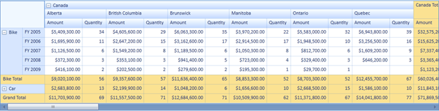
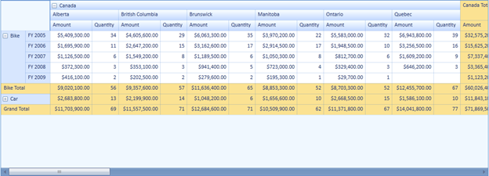

PivotGrid provides support for resizing the grid to fit its content while group expanding and collapsing the groups. The grid will be resized after refreshing the page.
Use Case Scenarios
This feature will be useful to provide more space to display the controls sharing its parent control during group collapse operation.
Properties
Table 10: Property Table
|
Property |
Description |
Type |
Data Type |
Reference links |
|
ResizePivotGridToFit |
Resizes the PivotGrid according to the content of the grid. |
Dependency |
Boolean |
NA |
Enabling Resizing Pivot Grid
You can enable or disable this feature using the ResizePivotGridToFit property. To enable resizing, set this property to true. To disable resizing, set this property to false. By default this is set to false.
The following code illustrates how to enable resizing to fit the content, when you expand or collapse the PivotGrid group:
|
[C#]
this .pivotGrid1.ResizePivotGridToFit = true; |
|
[VB]
Me .pivotGrid1.ResizePivotGridToFit = True |

Figure 36: Control Resized
The following code illustrates how to disable resizing to fit the content, when you expand or collapse the PivotGrid group:
|
[C#]
this .pivotGrid1.ResizePivotGridToFit = false; |
|
[VB]
Me .pivotGrid1.ResizePivotGridToFit = False |

Figure 37: Control not Resized
Sample Link
To view samples:
1. Open Syncfusion Dashboard.
2. Select BI > WPF.
3. Click Run Samples.
4. Navigate to PivotGrid > Product Showcase > Pivot Grid Demo.